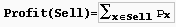

A supermarket has a set Prod of products on sale. It earns a profit px for each product x in Prod sold by a deadline dx that is measured as an integral number of time units starting from the moment the sale begins. Each product takes precisely one unit of time for being sold. A selling schedule is an ordered subset of products Sell from Prod such that the selling of each product x in Sell, according to the ordering of Sell, completes before the deadline dx or just when dx expires. The profit of the selling schedule is . An optimal selling schedule is a schedule with a maximum profit.
For example, consider the products Prod={a,b,c,d} with (pa,pa=(50,2), (pb,pb=(10,1), (pc,pc=(20,2), and (pd,pd=(30,1). The possible selling schedules are listed in table 1. For instance, the schedule Sell={d,a} shows that the selling of product d starts at time 0 and ends at time 1, while the selling of product a starts at time 1 and ends at time 2. Each of these products is sold by its deadline. Sell is the optimal schedule and its profit is 80.
Write a program that reads sets of products from an input text file and computes the profit of an optimal selling schedule for each set of products.
A set of products starts with an integer 0 <= n <= 10000, which is the number of products in the set, and continues with n pairs pi di of integers, 1 <= pi <= 10000 and 1 <= di <= 10000, that designate the profit and the selling deadline of the i-th product. White spaces can occur freely in input. Input data terminate with an end of file and are guaranteed correct.
For each set of products, the program prints on the standard output the profit of an optimal selling schedule for the set. Each result is printed from the beginning of a separate line.
4 50 2 10 1 20 2 30 1 7 20 1 2 1 10 3 100 2 8 2 5 20 50 10
80 185The sample input contains two product sets. The first set encodes the products from table 1. The second set is for 7 products. The profit of an optimal schedule for these products is 185.